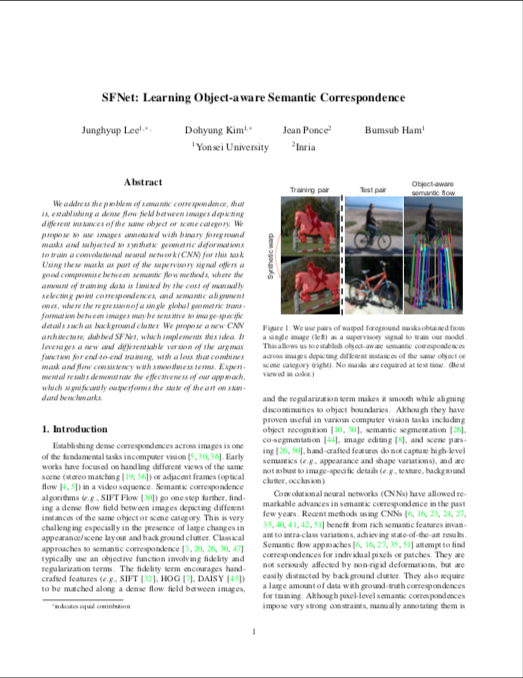

* indicates equal contribution
† indicates corresponding author
We address the problem of semantic correspondence, that is, establishing a dense flow field between images depicting different instances of the same object or scene category. We propose to use images annotated with binary foreground masks and subjected to synthetic geometric deformations to train a convolutional neural network (CNN) for this task. Using these masks as part of the supervisory signal offers a good compromise between semantic flow methods, where the amount of training data is limited by the cost of manually selecting point correspondences, and semantic alignment ones, where the regression of a single global geometric transformation between images may be sensitive to image-specific details such as background clutter. We propose a new CNN architecture, dubbed SFNet, which implements this idea. It leverages a new and differentiable version of the argmax function for end-to-end training, with a loss that combines mask and flow consistency with smoothness terms. Experimental results demonstrate the effectiveness of our approach, which significantly outperforms the state of the art on standard benchmarks.
|  |
J. Lee, D. Kim, J. Ponce, B. Ham SFNet: Learning Object-aware Semantic Flow In Proceedings of the IEEE Conference on Computer Vision and Pattern Recognition (CVPR), 2019 (Oral) [Paper on arXiv] |
This work was supported in part by the National Research Foundation of Korea (NRF) grant funded by the Korea government (MSIP) (No. 2017R1C1B2005584), the Louis Vuitton/ENS chair on artificial intelligence and the NYU/Inria collaboration agreement.